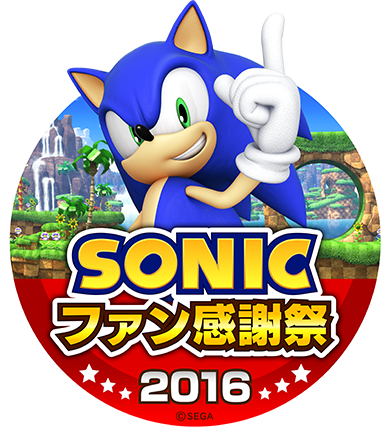
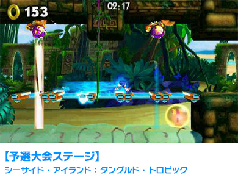
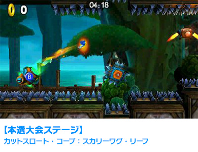

『ソニックトゥーン ファイアー＆アイス』タイムアタック大会開催概要

2016年12月23日（金・祝）に、東京ジョイポリスで行われる「ソニックファン感謝祭2016」イベントで、＜『ソニックトゥーンファイアー＆アイス』タイムアタック大会＞を開催いたします。
大会レギュレーション
| 使用ハード | ニンテンドー3DS |
|---|---|
| 使用ソフト | ソニックトゥーン ファイアー＆アイス |
| 対戦ステージ | 予選シーサイド・アイランド：タングルド・トロピック 本選カットスロート・コーブ：スカリーワグ・リーフ |


- 最速タイムを競う「タイムアタック方式」です。
- 予選大会、決勝大会ともに主催者側が用意したニンテンドー3DS本体(New、LLではございません。)でのプレイとなります。決勝は開発用機材を使用いたしますので、操作感などが若干異なる可能性がございます。
※大会運営機材の性能によって、稀に読み込み時間に誤差が生じる場合もございます。また、機材の個体差による変更、タイムアタックのやり直しはお受けできません。予めご了承ください。 - 予選大会の記録上位3名が、決勝戦へ進出できます。 決勝戦は1stFloorメインステージ壇上にて行われます。
- 「カットスロート・コーブ：カットスロート・ボス」をクリアした状態のセーブデータを使用しての挑戦となります。タイムアタックは、前の方のリザルト画面からリトライしてはじめる形となります。 ニンテンドー3DS本体を受け取ったらAボタンを押して、リトライしてください。
- ステージクリア後、リザルト画面で、コントローラーから手を放してください。 スタッフがクリア時のタイムの記録を取り、次の方に交代です。
- タイムアタックへの挑戦はお一人様一回までとなります。
- 制限時間は５分です。５分以内にステージクリアできない場合は失格となります。
- サンダー・アイランドでアンロックできるスキルアイテムは使用しません。
- リングの獲得数は対戦結果には関係ありません。
- 予選大会にて同着の場合は、じゃんけんにて決勝進出者を決定いたします。
- 本選にて同着の場合は、追加の課題ステージをプレイいただき、受賞者を決定いたします。追加の課題ステージでも同着の場合はじゃんけんにて受賞者を決定いたします。なお、追加の課題ステージは同着確定後にステージ上にて発表されます。（予選および本選ステージとは異なります。）
- 失格の条件【重要】
以下のいずれかに該当する場合には、失格となります。 - ゲーム内の経過タイムが5分を超えた場合
- タイムアタック終了後にリトライした場合
- プレイ中に「やり直す」「やめる」を選択し、タイムアタックを中断した場合
- 故意・不可抗力に関わらず、電源OFFにしてしまった場合
※電源スイッチにふれないようにご注意ください。 - 上記以外にも会の進行を大きく妨げる等、スタッフの指示に従って頂けない場合、主催者の判断で失格とさせて頂く場合がございます。大会運営にご協力の程よろしくお願いします。
大会スケジュール
予選
| 参加者数 | 先着で100名 |
|---|---|
| 参加方法 | 10時からの整理券配布（配布場所：1stFloorメインステージ横）と合わせて希望者に参加券配布 |
| 参加時間 | 11:00～13:00※予選大会エリア最終入場12:30 予選開催場所：3rdFloorマルチステージ |
- ※予選大会について、最終入場時間をすぎてから、大会エリアに入ることはできません。12:30までに入場の上、時間内に予選にご参加ください。最終入場時間までにご参加いただけなかった場合は失格となります。
- ※スケジュールは予告なく変更になる可能性がございます。予めご了承ください。
決勝
| 参加者数 | 3名 |
|---|---|
| 参加方法 | 14:00～ステージにて結果発表 |
| 集合場所 | メインステージ前観覧席 |
結果発表
決勝戦の進出者3名及び10位賞、25位賞、30位賞、40位賞を14:00からステージ上にて発表いたします。ぜひステージ前にお集まりください。
決勝進出者は、お名前（ニックネーム）が呼ばれましたらステージ壇上にお上がりください。お名前（ニックネーム）をお呼びした際、該当者がその場にいらっしゃらない場合は、繰り上げて次の順位の方に権利が移ります。
注意事項
- 予選大会、決勝大会ともに主催者側が用意したニンテンドー3DS本体（New、LLではございません）でのプレイとなります。決勝は開発用機材を使用いたしますので、操作感などが若干異なる可能性がございます。
- 使用されるステージ、及びルールは予告なく変更されることがあります。
- 大会（イベント）会場までの交通費、宿泊費は、自己負担です。
- 大会（イベント）中のメインステージ前でのご飲食を堅くお断りします。
- 大会（イベント）の開催時間や出演者はやむを得ぬ事情により予告なく変更となる場合がございます。
- 会場周辺での前日からの泊り込みや、荷物やシートでの場所取りなど他のお客さまのご迷惑となるような行為は堅くお断りします。
- 当日はスタッフの指示に従ってください。従っていただけない場合は、参加をお断りする場合がございます。
- 大会（イベント）中の危険行為は厳禁とさせていただきます。
- 会場への大会（イベント）の内容に関するお問い合わせはご遠慮ください。
- 天災や地震などの事由により、予告なく大会（イベント）を変更・中止する場合がございます。